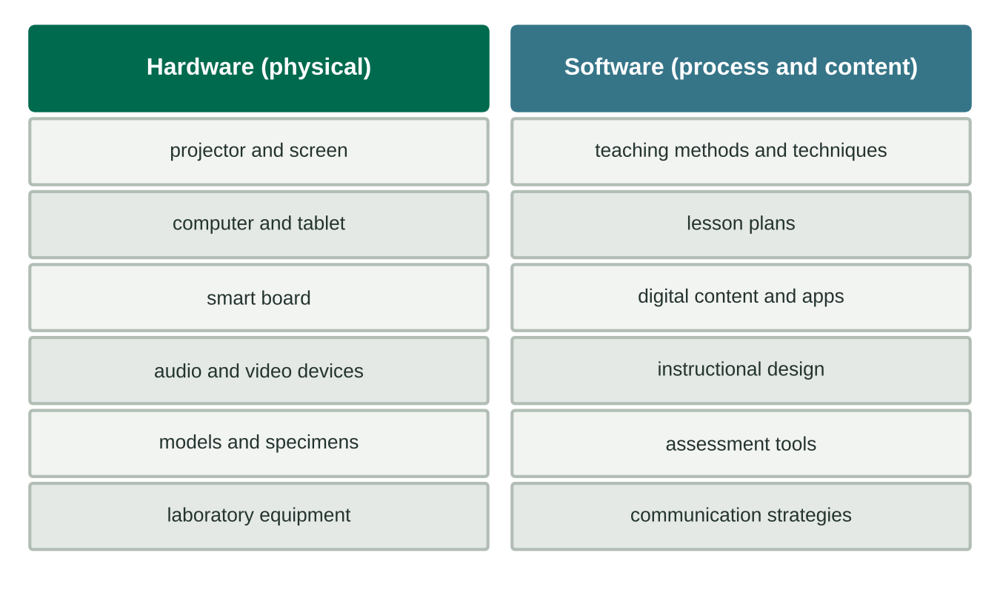
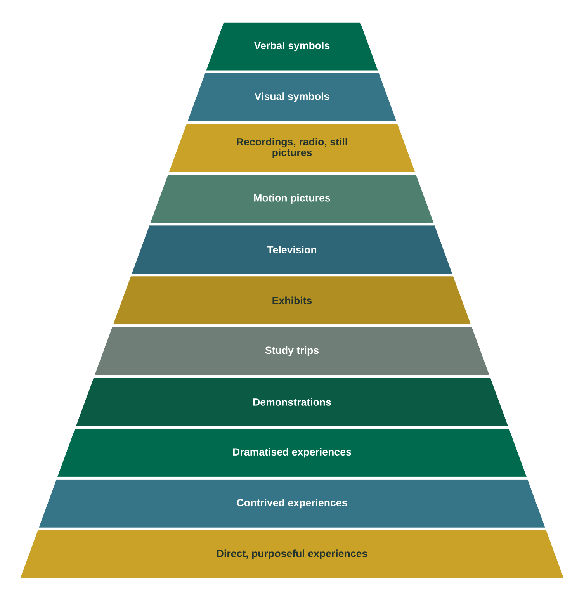
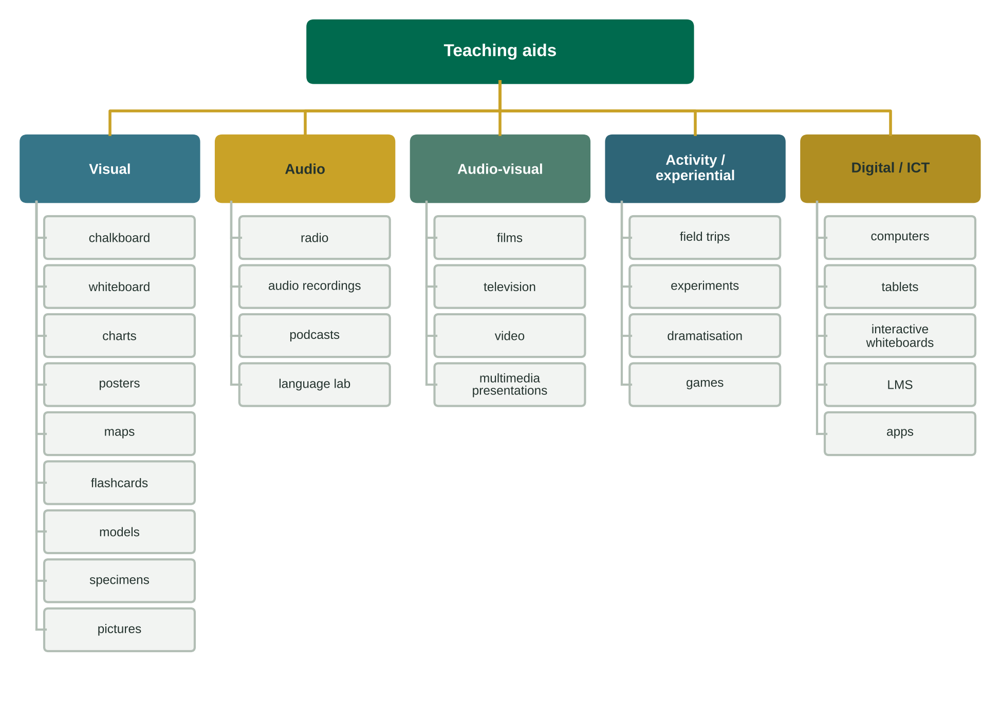
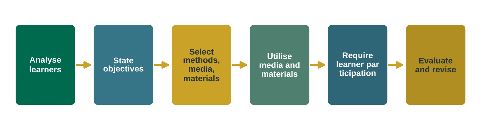
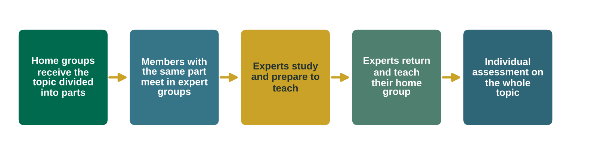
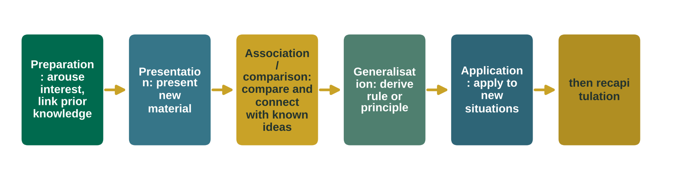

PC 114 Instructional Technology
Effective teaching, communication, materials, methods, active-learning procedures and lesson planning
Contents
- Unit 1: Key Concepts of Instructional Technology
- Unit 2: Effective Teaching and the Role of the Facilitator
- Unit 3: Effective Communication in Teaching and Learning
- Unit 4: Effective Management of Classroom Learning
- Unit 5: Creative Use of Instructional Materials
- Unit 6: Classroom Methods and Techniques
- Unit 7: Knowledge of Practice in Action
- Unit 8: Procedures of Teaching and Lesson Planning
- Unit 9: Dynamic Systems
- Exam Preparation Bank
- References
About this course
Instructional technology combines the "software" of teaching (methods, techniques, communication and planning) with the "hardware" (equipment, media and digital platforms). These notes define the field, set out what research says about effective teaching, explain communication and classroom management, show how to select and use instructional materials (including Dale's Cone and learning management systems), and then give a practical toolkit of more than forty active-learning procedures organised by the "knowledge of practice in action" framework. The last units cover year, unit and daily lesson planning and historically important systems such as the Dalton Plan, Kindergarten, Montessori, multigrade and multilevel teaching.
Course objectives
Explain instruction, technology, instructional technology and related terms.
Internalise the features and indicators of effective instruction and the facilitator's role.
Apply effective communication and classroom management in teaching.
Select, prepare, use and preserve instructional materials, including low-cost and digital ones.
Use a wide range of teaching methods and techniques, and prepare year, unit and lesson plans.
Each unit follows the official syllabus order. Read the narrative first, then the Key point boxes, then test yourself with the Exam focus questions.
Golden boxes = must-remember ideas. Teal boxes = definitions and study tips. Green boxes = Bangladesh context.
The final chapter is a question bank (MCQs with answers, short and broad questions) in the style of university examinations, followed by full references in APA 7th style.
Statistics on enrolment, budgets and policies change every year. Before an exam, check the latest BANBEIS, DPE, UGC and UNESCO figures.
Unit 1: Key Concepts of Instructional Technology
1.1 Core terms
| Term | Meaning |
|---|---|
| Technology | From Greek techne (art, craft) and logos (study): the systematic application of scientific or organised knowledge to practical tasks (Galbraith, 1967). Technology includes processes, not just machines. |
| Educational technology | "The study and ethical practice of facilitating learning and improving performance by creating, using, and managing appropriate technological processes and resources" (AECT; Januszewski & Molenda, 2008). It covers the whole education system. |
| Instructional technology | "The theory and practice of design, development, utilization, management, and evaluation of processes and resources for learning" (Seels & Richey, 1994). It focuses on the teaching–learning process. |
| Teaching | Activities by which a teacher helps students learn; it includes instruction, guidance and relationships. |
| Instruction | A deliberately arranged set of external events designed to support internal learning processes (Gagné, 1985). It is the planned, goal-oriented part of teaching. |
| Hardware | Physical equipment: projectors, computers, smart boards, audio devices, models, laboratory apparatus. |
| Software | Methods, techniques, programmes, content and digital applications that make hardware educationally useful. |
| Learning opportunity | Any situation, planned or incidental, that allows a learner to acquire knowledge, skills or attitudes. |
| Instructional materials | Resources used by teachers and learners to achieve learning objectives: textbooks, charts, models, worksheets, digital content. |
| Supplementary materials | Extra materials beyond the core textbook, such as supplementary readers, workbooks and reference books, to enrich or reinforce learning. |
| Teaching aids | Devices that help the teacher make learning concrete and interesting, such as visual, audio and audio-visual aids. |
| Teacher's guide (TG) | A document from the curriculum authority (NCTB) explaining how to teach each lesson: objectives, steps, activities, assessment. |
| Teacher's edition | A version of the student textbook with annotations, answers and teaching notes for the teacher. |
| Teacher's curriculum guide | A guide explaining the curriculum's rationale, competencies, organisation and assessment for teachers. |
| Teacher competency / standard | The knowledge, skills and dispositions a teacher must demonstrate, such as professional knowledge, professional practice and professional engagement (e.g. AITSL, 2011; Bangladesh's draft National Teacher Standards). |

Figure 1. The hardware and software dimensions of instructional technology
Educational technology is broader than instructional technology: it covers administration, planning and the whole system, while instructional technology is concerned with designing and delivering instruction. Both are about processes, not only devices.
Unit 2: Effective Teaching and the Role of the Facilitator
2.1 Changing perspectives of teaching
Teaching has moved from a transmission model (the teacher as source of knowledge, students as passive receivers; what Freire called "banking education") towards learner-centred, constructivist and facilitative models in which teachers design experiences that help students build understanding, collaborate and think critically. Key drivers include constructivist learning theory, cognitive science, the knowledge economy and digital technology.
| Traditional | Contemporary |
|---|---|
| Teacher-centred | Learner-centred |
| Knowledge transmission | Knowledge construction |
| Textbook as the only source | Multiple resources, including digital |
| Individual competition | Collaboration |
| Memorisation, summative tests | Understanding, formative assessment |
| Teacher as authority | Teacher as facilitator, coach, co-learner |
2.2 21st-century skills in teaching
The Partnership for 21st Century Learning (P21) framework highlights the 4Cs: critical thinking, creativity, collaboration and communication. Alongside these sit information, media and ICT literacy, and life and career skills (flexibility, initiative, social and cross-cultural skills, productivity, leadership). OECD's Learning Compass 2030 adds transformative competencies: creating new value, reconciling tensions and dilemmas, and taking responsibility.

Figure 2. The 4Cs and related 21st-century skills
2.3 The teacher as facilitator, in classrooms and online
A facilitator plans learning experiences, asks good questions, scaffolds, organises collaboration, monitors progress, gives feedback and creates a safe climate. Online, the facilitator also manages a learning platform, designs asynchronous activities, builds social, cognitive and teaching presence (the Community of Inquiry framework; Garrison, Anderson & Archer, 2000), and attends to digital equity and online safety.
2.4 Different aspects of teaching
Joyce, Weil and Calhoun (2015) and Eggen and Kauchak describe families of teaching approaches. The syllabus identifies four aspects:
Expository teaching: the teacher presents information in an organised way, through explanation, lecture or demonstration, often with advance organisers (Ausubel). It is efficient for transmitting structured knowledge.
Interactive teaching: knowledge is built through teacher–student and student–student interaction, such as questioning, discussion and cooperative learning.
Inquiry teaching: students investigate questions or problems, gather evidence and draw conclusions, as in guided discovery, Suchman's inquiry training and science investigations.
Models of reality: simulations, role-play, games, models and case studies that represent real situations so that students can explore them safely.
2.5 Phases of teaching (Jackson, 1968)

Figure 3. Philip Jackson's three phases of teaching
2.6 Criteria and factors of effective teaching
Research syntheses (Rosenshine, 2012; Muijs & Reynolds, 2018; Hattie, 2009; Coe et al., 2014) converge on these features:
Clarity of objectives and explanations.
Strong subject and pedagogical content knowledge.
Structured lessons: review, presentation in small steps, guided practice, independent practice (Rosenshine's ten "principles of instruction").
Questioning that checks understanding of all students and promotes thinking.
Formative assessment and feedback (Black & Wiliam, 1998).
Time on task and efficient classroom management.
High expectations and a supportive climate.
Variety of methods matched to objectives.
Reflection and continuous professional development.
Coe et al. (2014), What makes great teaching?, found the strongest evidence for (1) pedagogical content knowledge and (2) quality of instruction, followed by classroom climate, classroom management, teacher beliefs and professional behaviours. This is an excellent source to cite in essays.
Unit 3: Effective Communication in Teaching and Learning
3.1 Concept and nature
Communication (from the Latin communicare, to share or make common) is the process of transmitting and sharing meaning between sender and receiver. In the classroom it is two-way, continuous, verbal and non-verbal, and contextual. Teaching is essentially a communication process.
3.2 Communication styles
Verbal: spoken and written words. Effective verbal communication needs clarity, appropriate vocabulary, voice modulation (pitch, pace, volume, pause) and questioning.
Non-verbal: facial expression, eye contact, gestures, posture, proximity (proxemics), touch, appearance and paralanguage. Mehrabian's often-quoted 7–38–55% rule applies only to communicating feelings and attitudes, not to all communication; quote it with that caveat.
Unintended communication: messages sent without intention, such as boredom shown on the teacher's face, favouritism in eye contact, or the "hidden curriculum" of classroom seating.
3.3 Communication models
 with feedback, as used in classroom communication")
Figure 4. Shannon–Weaver model (1949) with feedback, as used in classroom communication
| Model | Key idea | Classroom use |
|---|---|---|
| Aristotle's model | Speaker, speech, audience, occasion, effect; persuasion through ethos, pathos, logos | Persuasive, engaging lecturing |
| Lasswell (1948) | Who says what, in which channel, to whom, with what effect? | Planning a lesson's message and media |
| Shannon–Weaver (1949) | Linear transmission with noise | Identifying barriers (noise) |
| Berlo's SMCR (1960) | Source, Message, Channel, Receiver, each with sub-factors (skills, attitudes, knowledge, culture) | Matching teacher and learner characteristics |
| Schramm (1954) | Interactive model with shared fields of experience | Communication works where experiences overlap, so build on learners' experiences |
| Transactional (Barnlund, 1970) | Simultaneous sending and receiving | Dialogic, interactive teaching |
3.4 Barriers in classroom communication
Physical: noise, poor acoustics, large classes, poor seating and lighting.
Psychological: anxiety, fear of the teacher, low motivation, prejudice.
Semantic / language: difficult vocabulary, jargon, a medium of instruction different from home language (very relevant for ethnic minority children in Bangladesh).
Physiological: hearing or visual impairment, fatigue, hunger.
Cultural: different norms of eye contact, gender interaction and politeness.
Teacher-related: monotone voice, speed, unclear instructions, lack of feedback.
3.5 Criteria of effective classroom communication
Clarity, conciseness, correctness, completeness, courtesy, concreteness and consideration (the "7 Cs"); two-way interaction with feedback; active listening; appropriate non-verbal cues; use of multiple channels (dual coding); checking understanding; and a respectful, inclusive tone.
Unit 4: Effective Management of Classroom Learning
4.1 Concept and contexts
Classroom management is everything a teacher does to organise students, space, time and materials so that learning can take place (Wong & Wong, 2009). The context differs across settings: large classes (60–80 students are common in Bangladeshi secondary schools), multigrade rooms, laboratories, outdoor learning, inclusive classrooms and online classes, each requiring different routines.
4.2 Factors that influence students' behaviour
| Physical factors | Socio-cultural factors | Educational factors |
|---|---|---|
| Overcrowding, heat, light, ventilation, noise, seating, hunger and fatigue | Family background, poverty, peer culture, gender norms, media, community values, language | Curriculum relevance, teaching method, pace, assessment pressure, teacher–student relationship, clarity of expectations |
4.3 Managing inappropriate behaviour
Use a graduated response: prevent (engaging lessons, routines), anticipate (withitness), deflect (proximity, eye contact, name), correct calmly and privately, apply logical consequences, and follow up with relationship repair. Avoid humiliation, sarcasm and corporal punishment.
4.4 Guidelines for effective praise
Brophy (1981) showed that praise is effective only when it is contingent, specific and credible.
Preventative: praise and acknowledge good behaviour early to set norms ("I like how quickly Row 2 got ready").
Supportive: encourage effort and progress, especially for struggling learners ("You checked each step carefully, and it worked").
Corrective: pair correction with recognition of what is right and what to improve ("Your introduction is clear; now support the point with an example").
| Effective praise | Ineffective praise |
|---|---|
| Specific to the behaviour or work | General ("Good") |
| Contingent on real achievement | Random or for everything |
| Attributes success to effort and strategy | Attributes success to luck or ability |
| Delivered sincerely, often privately | Exaggerated or public comparison |
| Focuses on improvement against the learner's own past | Compares with peers |
Unit 5: Creative Use of Instructional Materials
5.1 Concept and significance
Instructional materials make learning concrete, motivate learners, address different senses, save time, support retention, provide variety and help learners with diverse needs. They are effective only when matched to objectives and used skilfully.
5.2 Dale's Cone of Experience
Edgar Dale (1946, 1969) arranged learning experiences from the most concrete (bottom) to the most abstract (top). Dale intended the cone as a visual metaphor for concreteness, not as a ranking of effectiveness, and he did not attach retention percentages to it. The "people remember 10% of what they read..." figures are a later, unsupported addition (Molenda, 2003).

Figure 5. Dale's Cone of Experience (1969): from abstract (top) to concrete (bottom)
Using the cone to select materials: begin with concrete experiences for young or novice learners and for new or difficult concepts; move to abstract symbols once understanding is established; and combine levels, because abstract symbols are efficient once learners have the experiential base.
5.3 Classification of teaching aids

Figure 6. Classification of teaching aids
Other classifications: projected and non-projected; two-dimensional and three-dimensional; traditional and modern; and Bangladesh's multimedia classroom initiative (laptop, projector and teacher-made digital content, supported by the a2i programme and the Teachers' Portal).
5.4 Principles of selection
Relevance to the learning objectives.
Suitability for learners' age, ability and experience.
Accuracy and currency of content.
Clarity and visibility: large, clear and uncluttered.
Cost-effectiveness and availability.
Practicality: easy to use, portable, durable.
Cultural appropriateness and inclusiveness.
Variety and multi-sensory appeal.
The ASSURE model (Smaldino et al., 2019) systematises selection and use: Analyse learners, State objectives, Select methods, media and materials, Utilise media and materials, Require learner participation, Evaluate and revise.

Figure 7. The ASSURE model for planning the use of media (Smaldino et al., 2019)
5.5 Strategies for using materials
Preview and practise before class; prepare the environment; prepare the learners (purpose, what to look for); present at the right moment and remove distractions afterwards; involve learners actively; follow up with discussion and assessment.
5.6 Maintenance
Label and catalogue materials; store them in a dry, safe place (humidity is a serious problem in Bangladesh); laminate or mount charts; maintain equipment and keep spares; involve students as monitors; keep digital files backed up and organised; and keep a register of materials with condition and use.
5.7 Low-cost, no-cost and improvised materials
Teachers can make effective materials from local resources: bottle caps and seeds for counting, bamboo and clay models, sand trays for writing, flashcards from cardboard boxes, a pinhole camera from a shoebox, a rain gauge from a plastic bottle, newspaper cuttings, leaf collections and puppets from cloth. Benefits include low cost, cultural relevance, student involvement in making them and environmental awareness. UNESCO's New UNESCO source book for science teaching (1973) remains a classic source of improvised science apparatus.
5.8 Digital technologies in face-to-face and online classes
| Technology | Uses |
|---|---|
| Computer / laptop and projector | Presentations, simulations (PhET), videos, digital content |
| Mobile phones | Polls, quizzes (Kahoot, Google Forms), recording, messaging groups, reading apps; important in Bangladesh where smartphone access exceeds computer access |
| Internet resources | OERs, Khan Academy, Shikkhok Batayon (Teachers' Portal), Muktopaath (Bangladesh's online learning platform), YouTube channels |
| Learning Management Systems | Google Classroom (assignments, stream, grading, integration with Meet and Drive); Moodle (open-source LMS used by many universities, with courses, quizzes, forums and analytics) |
| Video conferencing | Zoom, Google Meet and Microsoft Teams for synchronous online classes |
| Generative AI tools | Lesson idea generation, feedback drafts, tutoring; need guidelines on integrity and privacy |
During COVID-19 school closures (2020–21), Bangladesh used Amar Ghore Amar School on Sangsad Television, radio and community radio lessons, Facebook live classes and the Muktopaath platform. The experience revealed a large digital divide by income and location.
The SAMR model (Puentedura, 2006) helps teachers think about technology integration: Substitution (technology replaces a tool with no functional change), Augmentation (substitution with functional improvement), Modification (significant task redesign) and Redefinition (new tasks previously impossible). TPACK (Mishra & Koehler, 2006) describes the integration of technological, pedagogical and content knowledge.
")
Figure 8. TPACK: Technological Pedagogical Content Knowledge (Mishra & Koehler, 2006)
5.9 Challenges to creative use of materials
Lack of funds and supplies; large classes; heavy workloads; limited teacher training; unreliable electricity and internet; examination-oriented culture; poor storage; and limited administrative support. Solutions include school-based material development workshops, resource corners, sharing among cluster schools and teacher communities of practice.
Unit 6: Classroom Methods and Techniques
6.1 Method, technique, approach and strategy
Approach: a set of assumptions about the nature of learning and teaching (for example the communicative approach to language).
Method: an overall plan for presenting content systematically, based on an approach (lecture, discussion, project).
Technique: a specific classroom activity or device used within a method (brainstorming, think-pair-share).
Strategy: a planned combination of methods and techniques to achieve objectives.
6.2 Lecture method
Features: oral presentation of organised information by the teacher, with illustration, to a group.
Learning theory link: expository teaching; Ausubel's meaningful reception learning and advance organisers.
How it works (example): a 20-minute lecture on the causes of the Language Movement, structured with an advance organiser, three key points, visuals and a summary.
Advantages: economical for large classes; covers much content; models expert thinking; good for introducing topics.
Limitations: passive learners; attention declines after 10–15 minutes; little feedback; ignores individual differences.
Improvements: "interactive lecture" with pauses for questions, think-pair-share, quick quizzes, visuals and guided notes; keep chunks short.
Roles: the teacher presents and checks understanding; students listen actively, take notes and ask questions.
Bangladesh context: dominant method in large classes; works best when combined with participatory techniques.
6.3 Group discussion
Features: students exchange ideas on a topic in small groups under guidelines; types include buzz groups, panel, symposium, debate and seminar.
Theory link: social constructivism (Vygotsky), cooperative learning (Johnson & Johnson, 1999).
Advantages: develops communication, critical thinking, tolerance and leadership; active involvement.
Limitations: domination by a few, off-task talk, time-consuming, difficult in fixed-bench classrooms.
Improvements: assign roles (leader, recorder, timekeeper, reporter), give clear tasks and time limits, require a product, and use structures such as numbered heads together.
6.4 Question–answer method (Socratic method)
Features: teaching through planned questions that guide students to discover knowledge.
Types of questions: recall, comprehension, application, analysis, evaluation and creation (Bloom); convergent and divergent; probing and redirecting.
Techniques: use wait time of 3–5 seconds (Rowe, 1986), distribute questions widely, use "no hands up", build on answers and avoid answering your own questions.
Advantages: active thinking, immediate feedback, diagnosis of misconceptions.
Limitations: can become a recall drill and can make shy learners anxious.
6.5 Problem-solving method
Features: learning organised around a problem that students solve through systematic steps.
Steps (Dewey's reflective thinking, 1910): sense the problem → define it → collect data → form hypotheses → test hypotheses → draw conclusions and apply them.
Theory link: pragmatism, cognitive psychology, constructivism.
Advantages: develops reasoning, independence and transfer.
Limitations: time-consuming; needs skilled teachers and resources; may frustrate weak students without scaffolding.
6.6 Project method
Origin: W. H. Kilpatrick (1918), "The project method", based on Dewey's philosophy. A project is "a wholehearted purposeful activity proceeding in a social environment."
Steps: providing a situation → choosing and purposing → planning → executing → evaluating → recording.
Types (Kilpatrick): constructive (making something), aesthetic (appreciation), problem, and drill or skill projects.
Example: a class project to survey drinking-water sources in the village and present a safe-water campaign.
Advantages: real-life learning, integration of subjects, cooperation, responsibility.
Limitations: time, cost, difficulty covering the syllabus, unequal participation.
Modern form: Project-Based Learning (PBL), with a driving question, sustained inquiry, authenticity, student voice and choice, reflection, critique and revision, and a public product (Larmer, Mergendoller & Boss, 2015).
6.7 Multiple Ways of Teaching and Learning (MWTL)
MWTL, promoted in Bangladesh's primary teacher education (DPEd) and NCTB teacher guides, means using a variety of approaches (individual, pair, group and whole-class work; songs, rhymes, games, stories, role-play and drawing; outdoor learning) so that learners with different abilities, interests and intelligences can all participate. It draws on Gardner's multiple intelligences and differentiated instruction (Tomlinson, 2001).
6.8 Blended learning and the flipped classroom
Blended learning: a deliberate combination of face-to-face and online learning, with some element of student control over time, place, path or pace (Horn & Staker, 2014). Models include rotation (station, lab, flipped), flex, à la carte and enriched virtual.
Flipped classroom (Bergmann & Sams, 2012): students study content at home through videos or readings, and class time is used for application, problem solving and discussion. In Bloom's terms, lower-order work happens at home and higher-order work happens in class.

Figure 9. Traditional and flipped classrooms
6.9 Online teaching-learning methods and techniques
Synchronous (live classes, breakout rooms, polls, chat) and asynchronous (recorded videos, discussion forums, quizzes, e-portfolios) modes; microlearning; gamification; collaborative documents; e-assessment. Good online teaching applies Mayer's (2009) principles of multimedia learning: coherence, signalling, redundancy, spatial and temporal contiguity, segmenting, pre-training, modality, multimedia and personalisation.
| Method | Best for | Main limitation |
|---|---|---|
| Lecture | Introducing structured content to large groups | Passive learning |
| Discussion | Attitudes, critical thinking, communication | Unequal participation |
| Question–answer | Checking understanding, stimulating thought | Can become recall drill |
| Problem solving | Reasoning and application | Time, scaffolding needs |
| Project | Integration, real-life skills | Time, resources |
| Flipped / blended | Higher-order use of class time | Needs home access and student self-discipline |
Unit 7: Knowledge of Practice in Action
7.1 Meaning
"Knowledge of practice in action" describes how a skilled teacher uses specific classroom procedures to move learners through the stages of knowledge building: activating prior knowledge, processing new information, linking it to other ideas and real life, translating it into new forms, synthesising it into coherent understanding and reflecting on their own thinking (metacognition). The procedures below come largely from active-learning and metacognitive teaching literature, such as the PEEL project (Baird & Northfield, 1992), Mitchell (2009) and Hattie (2009).

Figure 10. The cycle of knowledge of practice in action
7.2 Procedures for eliciting prior knowledge
| Procedure | How it works |
|---|---|
| Probe of prior views | Ask an open question or present a scenario to reveal what students already believe, including misconceptions |
| Logbook | Students keep a learning log recording what they know, questions and reflections |
| Card sorting | Students sort cards (concepts, examples, statements) into categories and justify their choices |
| Concept map | Students draw nodes and labelled links showing relationships between concepts (Novak & Gowin, 1984) |
| KWL (Know–Want–Learned) | A three-column chart: what I Know, what I Want to know, what I Learned (Ogle, 1986). The syllabus calls this "Know-What-Learn-How" |
| Brainstorming | Rapid, uncensored generation of ideas on a topic (Osborn) |
| Think-pair-share | Think individually, discuss with a partner, share with the class (Lyman, 1981) |
| Semantic map | A web of words and ideas radiating from a central concept, used for vocabulary and comprehension |
7.3 Procedures for knowledge processing
| Procedure | How it works |
|---|---|
| Jumbled text | Students reorder scrambled sentences or paragraphs to reconstruct logical sequence |
| Pyramids | Ideas are discussed in pairs, then fours, then eights, refining and agreeing at each level |
| Creating headings and subheadings | Students add headings to unlabelled text, which forces identification of main ideas |
| Question grid | A grid combining question starters (what, where, why, how) with verbs (is, did, can, would) to generate questions of increasing depth |
| Information grid | A table students fill with information under categories (e.g. features of different countries) |
| Question dice | Dice with question words on the faces, rolled to prompt questions about a text |
| Writing on the reading | Annotating text: underlining, margin notes, questions |
| PMI (Plus–Minus–Interesting) | De Bono's technique for evaluating an idea from three angles |
7.4 Procedures for linking
Linking cycle: learners connect a series of concepts in a circular chain, explaining each link.
Linking to real life: applying a concept to everyday experience, such as using friction to explain why roads are rough.
Creating analogies: comparing the unfamiliar with the familiar, such as the heart as a pump or an atom as a mini solar system, and discussing where the analogy breaks down.
Mind maps: radiant, colourful diagrams with keywords and images (Buzan).
7.5 Procedures for knowledge translation
Story from a graph, or a graph from a story: converting between narrative and graphical representations.
Role-play: acting out a situation or perspective.
Storyboarding: sequencing a process in illustrated frames.
Slowmation: a slow-motion animation that students make with still photos of models, which helps them explain scientific processes (Hoban, 2005).
Model making: constructing physical models.
Creative writing: poems, diaries or letters "in role" that express understanding.
7.6 Procedures for knowledge synthesising
Suchman inquiry technique: students ask yes/no questions to explain a puzzling event (a "discrepant event"), developing hypothesis-testing skills (Suchman, 1962).
Jigsaw (Aronson, 1978): each member of a "home group" studies one part in an "expert group" and then teaches it to the home group.
Before–Now–After: students record their ideas before the lesson, now, and how they will use them afterwards.
Postbox: students "post" responses or questions into labelled boxes or envelopes for different topics, which are then sorted and discussed.
Fishbowl discussion: an inner circle discusses while an outer circle observes, then they swap.

Figure 11. The jigsaw technique (Aronson, 1978)
7.7 Procedures for metacognition
Predict–Observe–Explain (POE) (White & Gunstone, 1992): students predict the outcome of a demonstration, observe it and explain any discrepancy, which exposes and challenges misconceptions.
Venn diagrams: comparing and contrasting concepts.
Moving-on map: at the end of a unit, students map what they have learned, what is still unclear and their next steps.
When you prepare a lesson for practice teaching, pick two or three of these procedures and use them clearly, for example think-pair-share to elicit prior knowledge, a jigsaw for processing and a moving-on map for metacognition. Naming them in exam answers also shows you can make learners active.
Unit 8: Procedures of Teaching and Lesson Planning
8.1 Year plan
Concept: an annual distribution of curriculum content across the academic calendar, considering holidays, examinations and co-curricular events.
Importance: ensures complete syllabus coverage, balanced pacing and coordination with school events.
Considerations: academic calendar, number of working days, curriculum and textbook, learner needs, assessment schedule, resources.
| Month | Units / chapters | Periods | Assessment | Co-curricular link |
|---|---|---|---|---|
| January | Ch. 1–2 | 16 | Diagnostic test | Textbook festival |
| February | Ch. 3 | 14 | Class test | International Mother Language Day |
| March | Ch. 4 | 14 | Assignment | Independence Day |
| April–May | Ch. 5–6 | 24 | Half-yearly examination | Sports day |
8.2 Unit plan
Concept: a plan for teaching a coherent unit (a group of related lessons) over several periods.
Structure: unit title, class, duration, learning outcomes or competencies, content breakdown by lesson, methods and activities, materials, assessment plan (formative and summative) and reflection.
Importance: links individual lessons into coherent learning; plans progression and assessment.
Backward design (Wiggins & McTighe, 2005): identify desired results → determine acceptable evidence → plan learning experiences.
8.3 Lesson plan
Concept: a teacher's detailed description of the course of instruction for one lesson. Origin: J. F. Herbart's steps of instruction, formalised by his followers (Ziller, Rein) as the five formal steps:

Figure 12. Herbartian steps of a lesson plan
Herbart's original four steps were clearness, association, system and method. Other influential lesson models include Gagné's nine events of instruction (gain attention; inform objectives; stimulate recall of prior learning; present content; provide learning guidance; elicit performance; provide feedback; assess performance; enhance retention and transfer) and the 5E model (Engage, Explore, Explain, Elaborate, Evaluate; Bybee, BSCS).
Importance of a lesson plan
Clear objectives; logical sequence; efficient time use; confidence; selection of appropriate methods and materials; built-in assessment; and a record for reflection and accountability.
Sample lesson plan structure (Bangladesh format)
| Component | Example (Class VI General Science: "Plant parts") |
|---|---|
| General information | School, class, subject, lesson topic, date, time (40 minutes), number of students |
| Learning outcomes | Students will be able to (1) identify the parts of a plant, (2) state the function of each part, (3) relate parts to their uses in daily life |
| Teaching materials | Real plant, chart, flashcards, worksheet |
| Introduction / greetings and motivation (5 min) | Show a real mustard plant; ask "What parts can you see?" |
| Presentation (20 min) | Group work: each group examines a part; card sorting of functions; teacher explanation using the chart |
| Assessment (10 min) | Oral questions; worksheet labelling; peer check |
| Summary and homework (5 min) | Summarise with a concept map; homework: collect and label two local plants |
| Reflection (after the lesson) | What worked, what to change next time |
8.4 Ensuring permanent learning
Durable learning comes from clear objectives, activation of prior knowledge, active processing, retrieval practice, spaced review, varied practice, feedback, application to real life and reflection. Plan short reviews at the start of each lesson and cumulative quizzes across units.
Unit 9: Dynamic Systems
9.1 Dalton Plan
Developed by Helen Parkhurst (1920, Dalton, Massachusetts), the Dalton Plan individualises learning through three elements: the house (homeroom community), the assignment (a monthly contract of work in each subject) and the laboratory (subject rooms where students work at their own pace with specialist teachers). Principles: freedom, cooperation and budgeting of time. Strengths: self-direction, responsibility and individual pace. Limitations: requires resources, specialist rooms and mature learners.
9.2 Kindergarten system
Founded by Friedrich Froebel (1837, Blankenburg, Germany). "Kindergarten" means "children's garden": the child is like a plant, the teacher like a gardener. Key elements are gifts (balls, cubes, cylinders for structured play), occupations (activities such as paper folding, weaving and clay modelling), songs and games (Mother Play), self-activity and unity. Froebel's influence is seen in pre-primary education everywhere.
9.3 Montessori system
Maria Montessori (1907, Casa dei Bambini, Rome) developed a method based on scientific observation of children. Principles: respect for the child; the absorbent mind (0–6); sensitive periods; the prepared environment; auto-education through self-correcting didactic apparatus (cylinder blocks, pink tower, sandpaper letters); freedom within limits; mixed-age classes; and the teacher as directress and observer. Activities cover practical life, sensorial, language, mathematics and culture.
| Feature | Kindergarten (Froebel) | Montessori |
|---|---|---|
| Core idea | Self-activity through play and unity | Auto-education through the prepared environment |
| Materials | Gifts and occupations | Self-correcting didactic apparatus |
| Teacher | Gardener, guide | Directress, observer |
| Emphasis | Play, songs, imagination, group | Senses, independence, individual work |
| Freedom | Guided | Considerable, within limits |
9.4 Multigrade teaching and learning
A multigrade class is one where one teacher teaches students from two or more grades at the same time, common in small rural schools (Little, 2006). Strategies: a common topic with differentiated tasks by grade; peer tutoring; group work; self-study materials and learning corners; a careful timetable that alternates direct teaching between grades. The Escuela Nueva model in Colombia is a well-known success. Benefits: cooperation and peer learning; challenges: teacher workload and grade-based curricula.
9.5 Multilevel teaching and learning
Multilevel classes contain learners of the same grade with widely differing levels of ability, language or readiness, which is common in every Bangladeshi classroom. Strategies: differentiated instruction (content, process, product, learning environment; Tomlinson, 2001), flexible grouping, tiered tasks, Teaching at the Right Level (TaRL; Banerjee et al., 2016), learning stations and individual learning plans.
| Multigrade | Multilevel |
|---|---|
| Two or more grades together | One grade, mixed abilities |
| Different curricula at once | One curriculum, differentiated |
| Common in small, remote schools | Present in all classrooms |
Exam Preparation Bank
A. Multiple-choice questions
1. "The theory and practice of design, development, utilization, management and evaluation of processes and resources for learning" defines instructional technology according to:
(a) Gagné (b) Seels and Richey (c) Dale (d) Skinner
Show answer
Answer: (b)
2. Projectors and computers are examples of:
(a) software (b) hardware (c) methods (d) techniques
Show answer
Answer: (b)
3. The phases of teaching (pre-active, interactive, post-active) were described by:
(a) Jackson (b) Flanders (c) Gagné (d) Herbart
Show answer
Answer: (a)
4. SMCR is a communication model by:
(a) Shannon (b) Berlo (c) Lasswell (d) Schramm
Show answer
Answer: (b)
5. At the base of Dale's Cone of Experience is:
(a) verbal symbols (b) demonstrations (c) direct, purposeful experiences (d) motion pictures
Show answer
Answer: (c)
6. In the ASSURE model, the first "S" stands for:
(a) Select media (b) State objectives (c) Study learners (d) Summarise
Show answer
Answer: (b)
7. Moodle is an example of:
(a) an LMS (b) a search engine (c) a social network (d) a video conferencing tool
Show answer
Answer: (a)
8. The project method was introduced by:
(a) Dewey (b) Kilpatrick (c) Parkhurst (d) Montessori
Show answer
Answer: (b)
9. In a flipped classroom, lectures are mainly delivered:
(a) in class (b) at home through videos (c) in the library (d) not at all
Show answer
Answer: (b)
10. The jigsaw technique was developed by:
(a) Aronson (b) Slavin (c) Johnson (d) Kagan
Show answer
Answer: (a)
11. POE stands for:
(a) Plan–Organise–Evaluate (b) Predict–Observe–Explain (c) Present–Order–Evaluate (d) Probe–Observe–Examine
Show answer
Answer: (b)
12. Herbartian steps begin with:
(a) presentation (b) preparation (c) association (d) generalisation
Show answer
Answer: (b)
13. The Dalton Plan was developed by:
(a) Helen Parkhurst (b) Maria Montessori (c) Froebel (d) Kilpatrick
Show answer
Answer: (a)
14. The "gifts" and "occupations" belong to:
(a) Montessori (b) Kindergarten (c) Dalton Plan (d) Project method
Show answer
Answer: (b)
15. The SAMR model was proposed by:
(a) Mishra (b) Puentedura (c) Koehler (d) Mayer
Show answer
Answer: (b)
16. One teacher teaching Classes I and II together is an example of:
(a) multilevel teaching (b) multigrade teaching (c) team teaching (d) micro-teaching
Show answer
Answer: (b)
17. Recommended "wait time" after asking a question is about:
(a) 0–1 s (b) 3–5 s (c) 15–20 s (d) 1 min
Show answer
Answer: (b)
18. KWL chart was developed by:
(a) Ogle (b) Novak (c) Buzan (d) De Bono
Show answer
Answer: (a)
B. Short-answer questions
Q1. Distinguish between educational technology and instructional technology.
Q2. What are the phases of teaching? Mention the teacher's tasks in each.
Q3. Name four barriers to classroom communication and suggest remedies.
Q4. State the principles of selecting instructional materials.
Q5. What is Dale's Cone of Experience? What is the common misconception about it?
Q6. Explain the steps of the project method.
Q7. Distinguish between multigrade and multilevel teaching.
Q8. Write the components of a lesson plan.
C. Broad questions
Q9. Discuss the changing role of the teacher as a facilitator in face-to-face and online classes in the 21st century.
Q10. Explain the communication models and discuss how a teacher can ensure effective classroom communication.
Q11. Discuss the classification, selection, use and maintenance of instructional materials. How can teachers in Bangladesh use low-cost and digital materials creatively?
Q12. Compare lecture, discussion, problem-solving and project methods with reference to learning theories and the Bangladeshi classroom.
Q13. What is "knowledge of practice in action"? Describe procedures for each stage with examples.
Q14. Prepare a 40-minute lesson plan on a topic of your choice using Herbartian or 5E steps and justify each step.
Q15. Compare the Montessori system and the Kindergarten system.
References
Aronson, E. (1978). The jigsaw classroom. Sage.
Baird, J. R., & Northfield, J. R. (Eds.). (1992). Learning from the PEEL experience. Monash University.
Bergmann, J., & Sams, A. (2012). Flip your classroom: Reach every student in every class every day. ISTE.
Berlo, D. K. (1960). The process of communication. Holt, Rinehart & Winston.
Black, P., & Wiliam, D. (1998). Inside the black box: Raising standards through classroom assessment. Phi Delta Kappan, 80(2), 139–148.
Brophy, J. (1981). Teacher praise: A functional analysis. Review of Educational Research, 51(1), 5–32.
Coe, R., Aloisi, C., Higgins, S., & Major, L. E. (2014). What makes great teaching? Review of the underpinning research. Sutton Trust.
Dale, E. (1969). Audiovisual methods in teaching (3rd ed.). Dryden Press.
Gagné, R. M. (1985). The conditions of learning and theory of instruction (4th ed.). Holt, Rinehart & Winston.
Garrison, D. R., Anderson, T., & Archer, W. (2000). Critical inquiry in a text-based environment. The Internet and Higher Education, 2(2–3), 87–105.
Hattie, J. (2009). Visible learning. Routledge.
Horn, M. B., & Staker, H. (2014). Blended: Using disruptive innovation to improve schools. Jossey-Bass.
Jackson, P. W. (1968). Life in classrooms. Holt, Rinehart & Winston.
Januszewski, A., & Molenda, M. (Eds.). (2008). Educational technology: A definition with commentary. Routledge.
Joyce, B., Weil, M., & Calhoun, E. (2015). Models of teaching (9th ed.). Pearson.
Kilpatrick, W. H. (1918). The project method. Teachers College Record, 19(4), 319–335.
Kyriacou, C. (2009). Effective teaching in schools: Theory and practice (3rd ed.). Nelson Thornes.
Little, A. W. (Ed.). (2006). Education for all and multigrade teaching: Challenges and opportunities. Springer.
Mayer, R. E. (2009). Multimedia learning (2nd ed.). Cambridge University Press.
Mishra, P., & Koehler, M. J. (2006). Technological pedagogical content knowledge. Teachers College Record, 108(6), 1017–1054.
Molenda, M. (2003). Cone of experience. In A. Kovalchick & K. Dawson (Eds.), Education and technology: An encyclopedia. ABC-CLIO.
Montessori, M. (1912). The Montessori method. Frederick A. Stokes.
Novak, J. D., & Gowin, D. B. (1984). Learning how to learn. Cambridge University Press.
Ogle, D. M. (1986). K-W-L: A teaching model that develops active reading of expository text. The Reading Teacher, 39(6), 564–570.
Parkhurst, H. (1922). Education on the Dalton Plan. E. P. Dutton.
Petty, G. (2009). Teaching today: A practical guide (4th ed.). Nelson Thornes.
Reigeluth, C. M. (Ed.). (1999). Instructional-design theories and models (Vol. 2). Lawrence Erlbaum.
Rosenshine, B. (2012). Principles of instruction. American Educator, 36(1), 12–19, 39.
Rowe, M. B. (1986). Wait time: Slowing down may be a way of speeding up. Journal of Teacher Education, 37(1), 43–50.
Seels, B. B., & Richey, R. C. (1994). Instructional technology: The definition and domains of the field. AECT.
Smaldino, S. E., Lowther, D. L., Mims, C., & Russell, J. D. (2019). Instructional technology and media for learning (12th ed.). Pearson.
Tomlinson, C. A. (2001). How to differentiate instruction in mixed-ability classrooms (2nd ed.). ASCD.
White, R., & Gunstone, R. (1992). Probing understanding. Falmer Press.
Wiggins, G., & McTighe, J. (2005). Understanding by design (2nd ed.). ASCD.